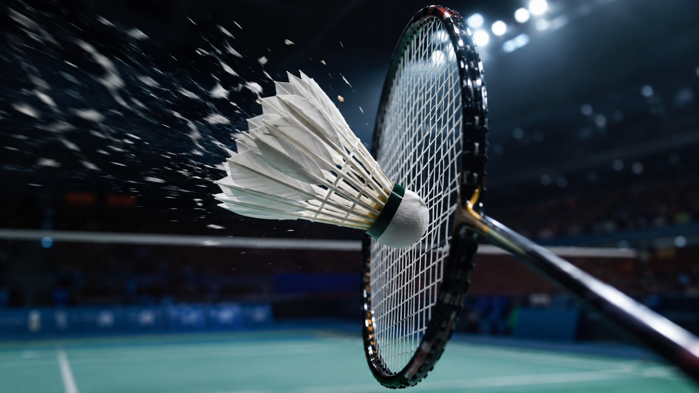
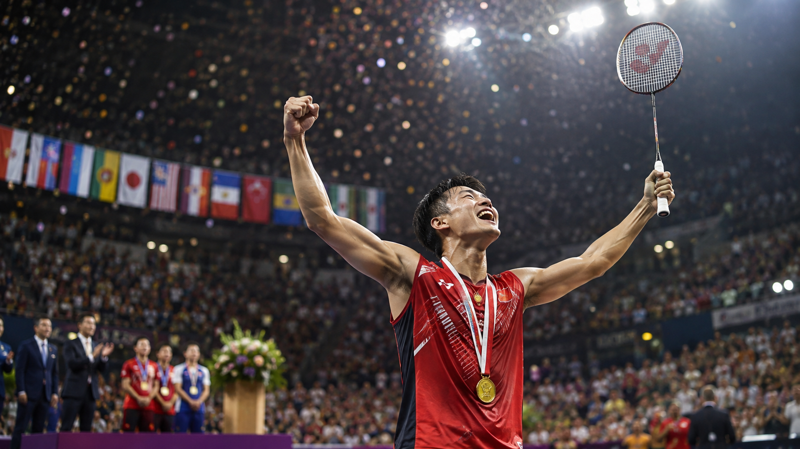
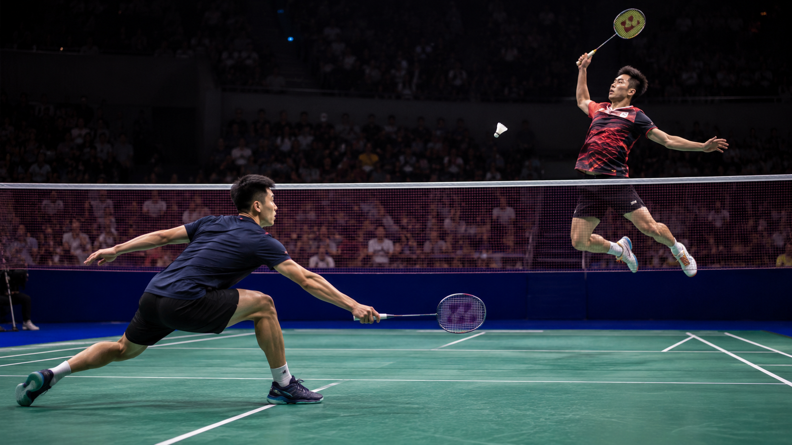

1. The History of Badminton
Badminton is one of the fastest racket sports in the world. Although it is now played professionally on every continent, its origins can be traced back to a much older game.
More than 2,000 years ago, similar games already existed in Asia and Europe, where people hit a feathered object to keep it in the air without allowing it to touch the ground. However, modern badminton began to take shape in the 19th century.
In British India, English army officers played a game called "Poona", named after the city of Pune. When they returned to England, they brought the game with them.
In 1873, during a gathering at Badminton House, an estate belonging to the Duke of Beaufort in Gloucestershire, England, the sport was introduced to a group of guests. The game became so popular that it began to be known as "badminton", the name it still retains today.
Over the years, official rules were established. In 1893, the first national badminton association was founded in England, and in 1899 the first major official tournament, the All England Open, was held. It remains one of the most prestigious championships in the world today.
The sport continued to grow throughout the 20th century, and in 1934 the international federation now known as the Badminton World Federation (BWF) was established. Badminton eventually achieved Olympic recognition when it became an official sport at the Barcelona 1992 Olympic Games.
Today, badminton is especially popular in Asian countries such as China, Indonesia, Malaysia, Japan, South Korea, and India, although Europe also has major badminton powers such as Denmark. It is estimated that hundreds of millions of people around the world play the sport recreationally or competitively.
What makes badminton unique is the speed of the shuttlecock, which can exceed 500 km/h during smashes by professional players, making badminton the racket sport with the fastest recorded shots.

2. Rules: How Badminton Is Played
Introduction
At first glance, badminton may seem like a simple sport: two players with rackets trying to send a shuttlecock over a net. However, behind that simple appearance lies a sport full of strategy, speed, and precision.
Its rules are designed to reward both power and intelligence, where a single movement can completely change the outcome of a point.
Objective of the Game
The objective of badminton is to hit the shuttlecock with the racket, send it into the opponent’s court, and prevent the opponent from returning it correctly.
A player wins a point when:
The shuttlecock touches the floor of the opponent’s court.
The opponent hits the shuttlecock outside the boundaries.
The opponent commits a fault.
The player or pair with the most points at the end of the match wins.
How Does the Scoring System Work?
Official matches are played as the best of three games.
Each game is won by reaching 21 points, but there is a special rule:
If both players reach 20–20, one must gain a two-point advantage.
If the score reaches 29–29, the next point (30) wins the game.
This prevents games from ending too quickly and allows for exciting comebacks.
Badminton Events
There are five official events:
Men’s Singles
One player against another.
Women’s Singles
One female player against another.
Men’s Doubles
Two male players against two male players.
Women’s Doubles
Two female players against two female players.
Mixed Doubles
A pair consisting of one man and one woman competes against another mixed pair.
Each event has slight tactical differences, particularly in terms of speed and positioning on the court.
The Badminton Court
The court has different playing areas depending on the event:
Singles uses a narrower court.
Doubles uses a wider court.
The net is positioned in the center and divides the two sides of the court.
Official dimensions:
Length: 13.40 meters.
Singles width: 5.18 meters.
Doubles width: 6.10 meters.
The Serve: The Shot That Starts Each Point
The serve is one of the most important parts of badminton.
Main rules:
The shuttlecock must be struck below the waist.
The head of the racket must be pointing downward at the moment of contact.
The serve must be sent diagonally into the opponent’s service court.
The player who wins a point serves again.
An interesting feature is that, unlike in some other sports, the serve in badminton does not automatically change players after every point: whoever wins the rally retains the serve.
Most Common Faults
A player commits a fault if:
The shuttlecock lands outside the boundaries.
The shuttlecock passes underneath or fails to cross the net.
The player hits the shuttlecock twice in succession.
The racket or the player’s body touches the net.
The player enters the opponent’s court.
The shuttlecock is struck before it crosses onto the player’s own side of the court.
A Rule That Makes Badminton Different
Unlike in tennis, the shuttlecock does not bounce. This means that every shot must be returned immediately.
For this reason, players need:
Extremely fast reflexes.
Great mobility.
The ability to anticipate an opponent’s movements.
A professional rally can involve dozens of shots in just a few seconds.
Quick Facts
Players per match: 1 vs. 1 or 2 vs. 2 Scoring: 21 points per game Official format: best of 3 games Shuttlecock speed record: more than 500 km/h in hitting tests International federation: BWF (Badminton World Federation)
Final Curiosity
Although the shuttlecock may appear slow because of its shape, professional players can react in less than a second to shots traveling at extreme speeds. The combination of speed, precision, and strategy makes badminton one of the most demanding racket sports in the world.
3. Equipment: The Elements That Make the Sport Possible
Introduction
Although it may seem like a simple sport, badminton uses equipment designed to provide speed, precision, and rapid movement. Each element plays an important role in the game.
The Racket
It is the player's main tool.
Characteristics:
It is very lightweight, allowing for quick movements.
It is usually made from materials such as carbon fiber.
Its design aims to achieve a balance between power and control.
A professional racket can weigh less than 100 grams, allowing players to execute extremely fast shots.
The Shuttlecock
It is the most distinctive element of badminton.
It can be made from:
Natural feathers (used in professional competitions).
Synthetic materials (more common for beginners).
Its shape allows it to reach very high speeds and then slow down rapidly after being hit.
Footwear
Badminton shoes are essential because the sport requires:
Constant changes of direction.
Quick lateral movements.
Continuous braking and acceleration.
Good footwear helps improve performance and reduce the risk of injury.
Other Equipment
In addition to the main equipment, players also use:
Net: divides the court and establishes the height of play.
Sportswear: designed to allow freedom of movement.
Grip: improves the player's hold on the racket.
Quick Facts
Racket: lightweight and durable Shuttlecock: can exceed 400 km/h during a smash Footwear: designed for explosive movements Professional racket weight: approximately 70–100 g
Curiosity
A badminton racket weighs less than many tennis rackets, yet it must withstand extremely fast shots and explosive movements throughout an entire match.
4. The Most Important Players in Badminton History
Introduction
Badminton has produced great champions who defined eras, dominated the world rankings, and took the sport to another level.
Some stood out because of their titles, others because of their playing style, and many because of the great rivalries that helped increase the sport’s popularity.
Lin Dan — The Badminton Legend
Considered by many to be the greatest badminton player of all time.
Known as “Super Dan,” he dominated the sport for more than a decade thanks to his power, speed, and competitive mentality.
Notable achievements:
Olympic gold medals in 2008 and 2012.
Five-time world champion.
Winner of numerous international titles.
First player to achieve badminton’s “Super Grand Slam” by winning all of the sport’s major available titles.
His rivalry with Lee Chong Wei is considered one of the greatest in the history of the sport.
Lee Chong Wei — The Champion Without Olympic Gold
Lee Chong Wei is considered one of the greatest players never to win an Olympic gold medal.
For years, he was Lin Dan’s greatest rival and dominated the world rankings with his incredible speed, technique, and consistency.
Notable achievements:
Three Olympic silver medals.
World No. 1 for more than 300 weeks.
Multiple international titles.
His career is remembered for his extraordinary professionalism and for being part of one of the most exciting rivalries in the sport.
Carolina Marín — The European Queen of Badminton
Carolina Marín changed the history of women’s badminton by becoming one of the few Western players capable of dominating a sport historically controlled by Asia.
She stood out for her aggressive style, intensity, and winning mentality.
Notable achievements:
Olympic gold medal at Rio 2016.
Three-time world champion.
Multiple European titles.
Her success helped make badminton a much more widely known sport in Europe.
Kento Momota — The Japanese Talent Who Reached the Top
Kento Momota was one of the most dominant players of his generation.
Known for his tactical intelligence and exceptional control of the game, he reached World No. 1.
Notable achievements:
Two-time world champion.
World No. 1.
Multiple international circuit titles.
Many experts considered him the leading figure of a new era in Japanese badminton.
Tai Tzu-ying — The Player of Perfect Technique
Tai Tzu-ying is considered one of the most technically gifted players in badminton history.
Her style was based on creativity, deception, and unexpected shots that surprised even the best opponents.
Notable achievements:
World No. 1 for long periods.
Champion of major international tournaments.
Recognized for her skill and elegance on the court.
Chen Long — The Heir to Chinese Dominance
Chen Long was one of China’s greatest stars after the Lin Dan era.
He stood out for his endurance, defensive ability, and capacity to maintain an extremely high level during long matches.
Notable achievements:
Olympic gold medal at Rio 2016.
World champion in 2014 and 2015.
Numerous international titles.
Quick Facts
Player with the greatest historical impact: Lin Dan Greatest rivalry: Lin Dan vs. Lee Chong Wei Leading European figure: Carolina Marín Major Japanese star: Kento Momota Historical powerhouse: China
Curiosity
The rivalry between Lin Dan and Lee Chong Wei became so important that many fans compared their encounters to some of the great historic duels in other sports, as for years they represented the clash between two styles and two generations of badminton.

5. World Ranking and Historical World Ranking
Introduction
The world badminton ranking is the official classification used to determine who the best players are based on their results in international competitions.
It is produced by the BWF (Badminton World Federation) and takes into account the points earned in official tournaments. These rankings are used to determine qualification, seedings, and participation in major events.
How Does the Ranking Work?
Players accumulate points based on:
Titles won.
Position reached in each tournament.
Importance of the competition.
Recent results.
The most important tournaments award more points, meaning that winning major events can quickly change the rankings.
World Ranking Categories
The BWF maintains separate rankings for:
Men’s singles.
Women’s singles.
Men’s doubles.
Women’s doubles.
Mixed doubles.
Players Who Dominated the World Rankings
Lee Chong Wei
One of the greatest dominators of the men’s world ranking.
World No. 1 for more than 300 weeks.
Stood out for his speed and consistency.
Considered one of the most consistent players in badminton history.
Kento Momota
One of the dominant players of the modern era.
Reached World No. 1.
Two-time world champion.
Recognized for his technique and control of the game.
Lin Dan
Although he was not the player with the most weeks at World No. 1, his historical impact is enormous.
Two Olympic gold medals.
Five world championships.
Considered by many to be the greatest player in badminton history.
Viktor Axelsen
One of the great names of the modern era.
World No. 1.
Olympic champion.
Known for his physical power and attacking style of play.
Historical Ranking: The Great Names of Badminton
When it comes to legacy, titles, and impact, these players are often considered among the most important:
1. Lin Dan — China
The winner of the sport’s biggest titles.
2. Lee Chong Wei — Malaysia
The symbol of consistency and dominance in the world rankings.
3. Taufik Hidayat — Indonesia
An Indonesian legend known for his technique and talent.
Peter Gade — Denmark
One of the great European representatives of the sport.
Carolina Marín — Spain
The player who broke Asia’s dominance in women’s badminton.
Quick Facts
Organization: BWF Ranking based on: points earned in international tournaments Categories: singles and doubles Greatest dominance of the men’s ranking: Lee Chong Wei One of the greatest historical legacies: Lin Dan
Curiosity
In badminton, being World No. 1 and being considered the greatest player in history are not always the same thing.
For example, Lee Chong Wei dominated the world rankings for years, while Lin Dan won the sport’s most important titles, creating one of badminton’s most famous debates: is the better player the one who dominates the rankings or the one who wins the biggest championships?
6. Records: Incredible Speeds and Historic Achievements
Introduction
Although many people see it as a calm sport, badminton is one of the most explosive sports in the world.
Its records demonstrate the speed, endurance, and skill required by professional players.
The Fastest Shot Ever Recorded
Badminton features one of the fastest shots in world sport.
In speed tests, a badminton smash exceeded 500 km/h, a figure higher than the top speed of many sports cars.
The record was achieved in tests using professional equipment and demonstrates the enormous power that can be generated with a badminton racket.
The Longest Match in History
The longest recorded badminton match lasted approximately:
2 hours and 41 minutes
It was played between:
Lee Chong Wei and Jan Ø. Jørgensen at the 2017 World Championships.
This type of match demonstrates the physical endurance required to compete at the highest level.
Most World Championship Titles
One of the most successful players in World Championship history is:
Lin Dan
Achievements:
5 individual world titles.
2 Olympic gold medals.
His dominance over many years made him one of the greatest legends in the sport.
Most Time as World No. 1
Lee Chong Wei
He held the World No. 1 ranking for more than:
300 weeks
His consistency kept him at the top for several seasons, an extremely difficult achievement in such a competitive sport.
The Fastest Shuttlecock
A badminton shuttlecock can reach speeds of more than:
400 km/h during a professional smash
Although it weighs only a few grams, its design allows it to accelerate incredibly quickly when struck.
Quick Facts
Maximum recorded speed: 500+ km/h Longest match: more than 2 and a half hours Legend with the most world titles: Lin Dan Major dominance of the world ranking: Lee Chong Wei Typical speed of professional smashes: 300+ km/h
Curiosity
A badminton shuttlecock can travel faster than a tennis ball, but it loses speed much more quickly because of its aerodynamic design.
That is why badminton combines explosive shots with extreme precision.

7. Badminton Curiosities: Facts Few People Know
One of the Fastest Sports in the World
Although it may not seem like it, badminton is one of the sports with the fastest movements.
A professional smash can exceed 400 km/h, and speeds of more than 500 km/h have been recorded in special tests.
The Shuttlecock Is More Important Than It Seems
The most distinctive element of badminton is the shuttlecock.
A professional shuttlecock usually has 16 natural feathers and is designed to spin and stabilize itself during flight.
Its shape allows it to reach extremely high speeds while also slowing down rapidly after being hit.
Players Cover Great Distances on a Small Court
A badminton court is much smaller than a tennis court, yet players are constantly moving:
Changing direction.
Jumping.
Accelerating quickly.
Moving laterally.
During an intense match, a player can cover several kilometers.
China Is Badminton’s Great Powerhouse
China became the world’s leading badminton power thanks to its player development system and major investment in the sport.
It has produced some of the greatest legends in badminton history, including:
Lin Dan.
Chen Long.
Zhang Ning.
Fu Haifeng.
Olympic Badminton Is More Recent Than Many People Think
Although the modern sport originated in the 19th century, badminton only became an official Olympic discipline at:
Barcelona 1992
Since then, winning an Olympic gold medal has become one of the greatest achievements any badminton player can accomplish.
The Rivalry That Defined an Era
For years, badminton was shaped by one historic rivalry:
Lin Dan vs. Lee Chong Wei
Both players dominated the sport during their era, and their encounters are considered some of the greatest matches in badminton history.
A Sport Where Speed Is Not Everything
Although shots can be extremely fast, the best players do not win through power alone.
Strategy, deception, and the ability to anticipate an opponent’s moves are just as important.
Quick Facts
Sport: Badminton Smashes: 400+ km/h Professional shuttlecock: 16 feathers Olympic since: 1992 Historical powerhouse: China
Final Curiosity
Badminton combines two characteristics that may seem completely opposite: extremely fast shots and millimeter-level precision.
A player can unleash a high-speed smash and, just seconds later, need to play a delicate shot placed precisely into the corner of the court.
Quick Facts
Badminton's modern form developed in the 19th century after the game known as Poona was played by British officers in India and later introduced in England.
The sport took the name badminton after being played at Badminton House in Gloucestershire in 1873.
The Badminton World Federation (BWF) traces its international governing structure back to 1934.
Badminton became an official Olympic sport at the Barcelona 1992 Games.
Official matches are played as the best of three games, with each game normally played to 21 points.
The five official events are men's singles, women's singles, men's doubles, women's doubles and mixed doubles.
A professional shuttlecock traditionally uses 16 feathers.
Badminton is famous for extreme shuttlecock speeds, with special hitting tests exceeding 500 km/h.
Lin Dan is presented in these source documents as one of the greatest players in badminton history and won two Olympic gold medals and five world titles.
Lee Chong Wei spent more than 300 weeks as World No. 1 and formed one of the sport's most famous rivalries with Lin Dan.
China has been one of badminton's major historical powers, while countries including Indonesia, Malaysia, Japan, South Korea, India and Denmark have also produced elite players.
The Big Question
What really makes a badminton player the greatest of all time?
Badminton creates an unusual debate because greatness can be measured in several different ways.
Should the greatest player be the one who wins the most important championships, including the Olympic Games and World Championships? Or should consistency matter more, rewarding the player who remains at the top of the world ranking for the longest period?
The rivalry between Lin Dan and Lee Chong Wei captures that question perfectly within the material in this article. Lin Dan is associated with extraordinary success in the sport's biggest championships, while Lee Chong Wei is remembered for remarkable consistency and more than 300 weeks at World No. 1.
Different eras, playing styles and competitive conditions make direct comparisons difficult. That may be why the question remains so compelling: in badminton, does greatness belong to the player who dominates the biggest moments, the player who dominates over time, or the player who changes how the sport itself is understood?